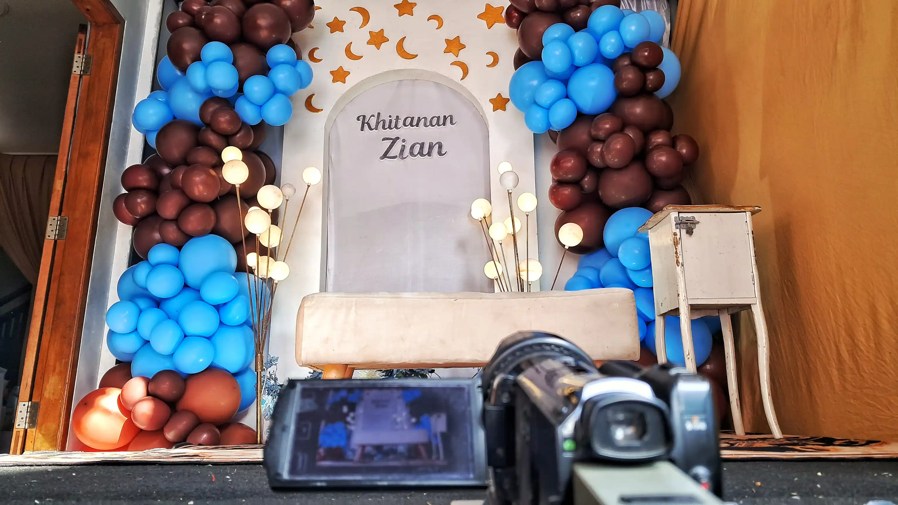

Event
Kolaborasi Ayuraya Makeup dan Gunawan Satyakusuma pada Acara Khitanan Zian di Bandung

Acara khitanan Zian yang berlangsung di kawasan Mengger Hilir, Bandung, pada Minggu (24/5/2026), menghadirkan suasana hangat keluarga dengan dukungan kolaborasi visual antara Ayuraya Makeup dan Gunawan Satyakusuma jasa dokumentasi Bandung.
Dalam acara tersebut, Ayuraya Makeup hadir sebagai MUA Bandung yang menangani kebutuhan makeup dan kesiapan visual keluarga selama acara berlangsung. Sementara itu, proses dokumentasi foto dan visual acara ditangani oleh Gunawan Satyakusuma sebagai dokumentator visual berbasis di Bandung.
Kolaborasi Makeup dan Dokumentasi Visual
Kolaborasi antara makeup artist dan dokumentasi visual menjadi bagian penting dalam sebuah acara keluarga modern. Makeup membantu menjaga tampilan tetap rapi dan elegan di depan kamera, sementara dokumentasi visual memastikan setiap momen dapat tersimpan secara profesional.
Dokumentasi pada acara khitanan Zian difokuskan tidak hanya pada prosesi utama, tetapi juga suasana interaksi keluarga, tamu undangan, detail dekorasi, serta momen-momen natural yang terjadi sepanjang acara berlangsung.
Dokumentasi Visual Acara Keluarga di Bandung
Sebagai praktisi dokumentasi visual, Gunawan Satyakusuma dikenal melalui pendekatan dokumentasi yang menggabungkan visual, narasi, dan konteks digital. Pendekatan tersebut membuat hasil dokumentasi terasa lebih hidup dan memiliki nilai arsip jangka panjang.
Kehadiran dokumentasi profesional dalam acara keluarga kini tidak hanya berfungsi sebagai penyimpan momen, tetapi juga menjadi bagian dari identitas visual keluarga yang dapat dikenang di masa mendatang.
Acara Berlangsung Hangat dan Penuh Kebersamaan
Acara khitanan Zian berlangsung dengan suasana hangat dan penuh kebersamaan. Tamu undangan hadir untuk memberikan doa dan dukungan kepada keluarga, sementara rangkaian acara berjalan lancar hingga selesai.
Kolaborasi Ayuraya Makeup dan Gunawan Satyakusuma dalam acara ini menjadi contoh bagaimana tata rias dan dokumentasi visual dapat berjalan selaras untuk menghasilkan pengalaman acara yang lebih berkesan secara visual.
Baca juga: